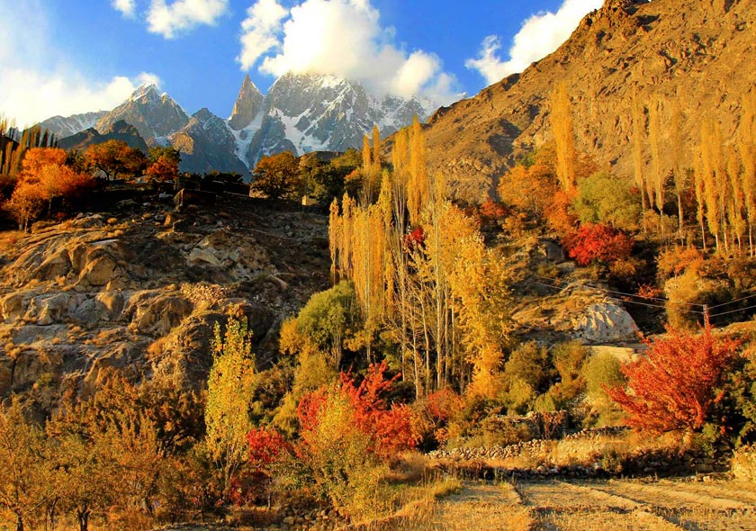
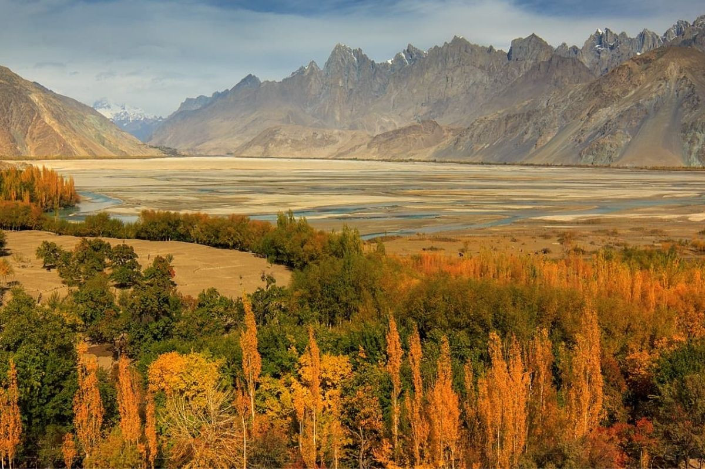
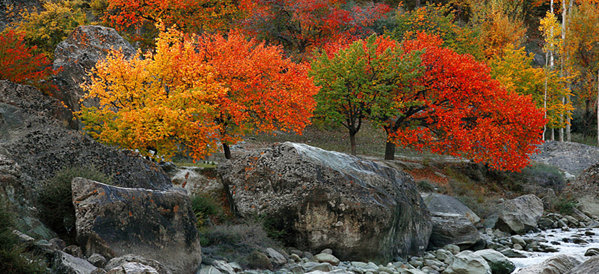
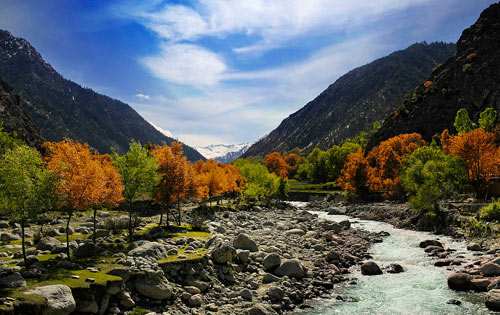

🍂 AUTUMN IN PAKISTAN
COLORS OF
AUTUMN
Experience Pakistan when the mountains and valleys turn into a breathtaking palette of gold, orange and red.

DISCOVER PAKISTAN
🍂 AUTUMN IN PAKISTAN
Experience Pakistan when the mountains and valleys turn into a breathtaking palette of gold, orange and red.
AUTUMN ADVENTURES
Autumn is one of the most beautiful times to explore northern Pakistan. The trees change colour, the weather becomes cooler and the valleys are covered in incredible shades of gold, orange and red.
If you love photography, peaceful landscapes and cool mountain weather, autumn is the perfect season for you.

Hunza becomes one of Pakistan's most spectacular autumn destinations. The valley is surrounded by mountains while trees change into beautiful shades of yellow, orange and red.
Perfect for photography, peaceful walks, mountain views and experiencing the famous autumn colours of Hunza.

Skardu offers dramatic mountain scenery combined with colourful autumn landscapes. The changing trees create a beautiful contrast with the surrounding peaks.
Visit for breathtaking views, photography, peaceful valleys and unforgettable mountain scenery.

Swat becomes incredibly colourful during autumn. Its forests, rivers and mountains create a peaceful atmosphere for travellers.
Enjoy cool weather, colourful forests, beautiful rivers and relaxing valley views.

Naltar Valley offers peaceful mountain landscapes surrounded by forests and towering peaks. During autumn, the changing leaves add incredible colour to the valley.
It is ideal for nature lovers, photographers and travellers who want a quieter mountain experience.
AUTUMN TRAVEL TIPS
Mountain temperatures can become cool, especially in the evening.
Autumn colours create incredible photography opportunities.
Check weather and road conditions before travelling to mountain areas.